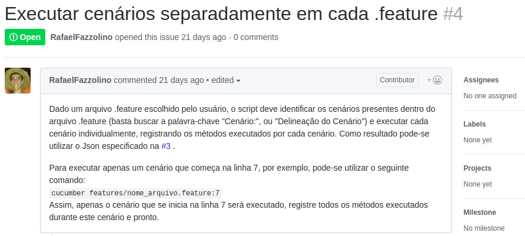

Histórico de Revisões
| Data | Versão | Descrição | Autor(es) |
|---|---|---|---|
| 30/05/2018 | 1.0 | Criação do Documento | Letícia |
| 17/06/2018 | 2.0 | Fechamento do Documento | Letícia |
Elicitação de Requisitos
Nossa biblioteca, por se tratar de um projeto de contribuição, iniciou-se, em seu controle de versão, a partir de um fork realizado do projeto já existente, do aluno de mestrado do departamento de ciência da computação, Rafael Fazzolino, que possui um repositório com a versão inicial da biblioteca, que pode ser encontrado aqui.
Os requisitos foram rastreados como issues no repositório original, pelo próprio Rafael, que atuou como P.O dentro do nosso desenvolvimento.
Através de reuniões constantes com o P.O,
